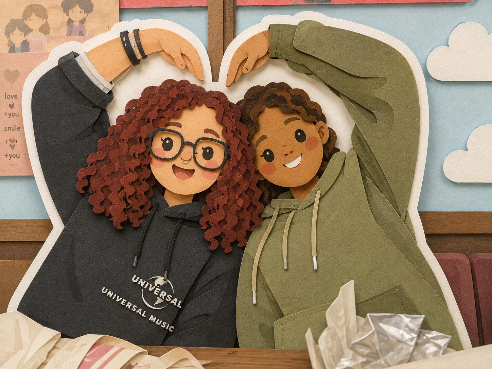

FELIZ CUMPLEAÑOS
Soy programadora asi que aja, de algo debe servirme,
ya que no puedo hacerte regalos que verdaderamente valgan
la pena pues traté de estar presente de alguna forma.
Cuando sea millonaria te voy a hacer muchos regalos muy lindos
y dignos de ti, por ahora debes conformarte con poco, pero
desde que consiga te mandare alguito, pinky promise.
Permiteme decirte que eres de las cosas más bonitas que
me ha pasado en la vida, te extraño mucho, espero que la vida
nos de la dicha de poder volver a compartir muchos momentos
presencialmente, que podamos ser el apoyo de la otra estando al ladito,
no por medio de una pantalla, pero mientras eso pasa, aqui me
tienes, por medio de una pantalla, pero me tienes.
Te amo infinito mi niña bonita.💜✨
